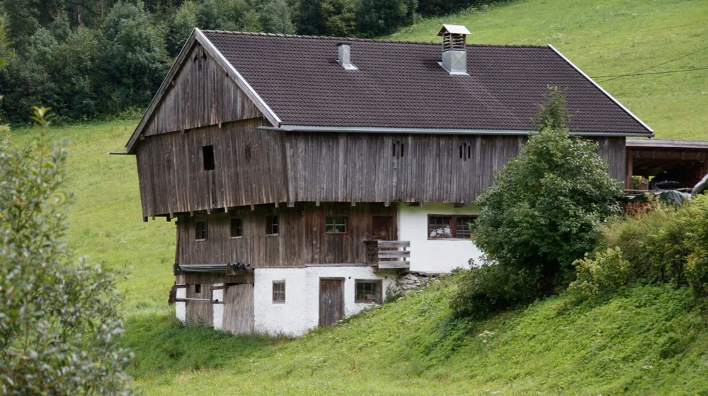

귀농귀촌 지원금, 놓치면 후회할 3가지 필수 체크리스트
사진: Damir K / Pexels (무료 이미지, 출처 표기)
귀농귀촌 지원금, 나도 받을 수 있을까? (자격 조건)

귀농귀촌 지원금은 농촌으로 이주하여 농업에 종사하거나, 농촌 지역에 거주하며 지역 발전에 기여하려는 분들을 위해 마련된 제도입니다. 하지만 누구나 받을 수 있는 것은 아니며, 몇 가지 핵심 자격 요건을 충족해야 합니다.
주요 자격은 다음과 같습니다. 첫째, 연령 및 거주지 조건입니다. 일반적으로 만 65세 이하의 세대주로, 농촌 외의 지역에 1년 이상 거주하다가 농촌으로 전입하여 실제 거주하고 농업에 종사(예정)해야 합니다. 둘째, 귀농귀촌 교육 이수입니다. 농업에 대한 이해와 의지를 증명하기 위해 농림축산식품부에서 인정하는 귀농귀촌 관련 교육을 100시간 이상 이수해야 하는 경우가 많습니다. 셋째, 영농 경력 조건입니다. 귀농을 선택한 경우, 영농 경력이 5년 미만이어야 합니다. 귀촌인의 경우 농업 외의 분야에서 활동해도 지원 대상이 될 수 있습니다.
이외에도 각 지자체(지방자치단체)별로 별도의 추가 조건을 두는 경우가 많으므로, 이주를 희망하는 지역의 귀농귀촌 지원 정책을 미리 확인하는 것이 중요합니다. 2026년 10월 기준의 일반적인 조건이며, 정확한 사항은 귀농귀촌 종합센터나 해당 지자체에서 다시 확인하시길 권장합니다.
어떤 지원금을 신청할 수 있을까? 주요 사업 유형
귀농귀촌 지원 사업은 크게 정착 및 창업 지원, 주거 지원, 교육 지원 등으로 나눌 수 있습니다. 농림축산식품부에서는 다양한 사업을 운영하며, 이 중 대표적인 두 가지 사업은 다음과 같습니다.
1. 귀농 창업 및 주택 구입 지원사업: 귀농인이 안정적으로 농업에 정착할 수 있도록 농지 구입, 농업 시설 설치, 운영 자금 및 주택 구입 또는 신축 비용을 저리로 융자해주는 사업입니다. 대출 한도는 최대 3억 원(창업), 7,500만 원(주택)이며, 5년 거치 10년 상환 조건으로 연 1.5%의 금리가 적용됩니다. (2026년 10월 기준)
2. 귀농인 정착지원 사업: 귀농 초기의 소득 불안정을 해소하고 안정적인 정착을 돕기 위해 월별 정착지원금을 지급하는 사업입니다. 주로 지자체에서 운영하며, 신규 귀농인 중 특정 요건을 충족하는 경우 최대 1년간 월 일정 금액을 지급합니다. 지원 대상과 금액은 지자체별로 차이가 크므로 반드시 확인해야 합니다.
그 외에도 농업 기술 교육, 귀농귀촌 박람회 참가 지원, 농기계 임대료 지원 등 다양한 형태의 직간접적인 지원이 있으니, 본인의 상황에 맞는 지원 사업을 꼼꼼히 찾아보는 것이 좋습니다.
성공적인 신청을 위한 절차와 핵심 준비물
귀농귀촌 지원금 신청은 대부분 지자체나 농림축산식품부 산하 기관을 통해 진행됩니다. 일반적인 신청 절차와 필요한 핵심 준비물은 다음과 같습니다.
- 정보 탐색 및 상담: 귀농귀촌 종합센터(www.returnfarm.com) 또는 이주 희망 지역의 시·군 귀농귀촌센터에서 지원 사업에 대한 정보를 얻고 상담을 받습니다.
- 교육 이수: 필요한 귀농귀촌 교육 시간을 이수하고 관련 증명서를 발급받습니다.
- 사업 계획서 작성: 지원받고자 하는 사업의 종류와 규모, 자금 활용 계획, 영농 또는 귀촌 활동 계획 등을 구체적으로 작성합니다. 이 계획서가 심사의 중요한 기준이 됩니다.
- 구비 서류 준비: 신분증, 주민등록등본, 가족관계증명서, 농지원부(해당 시), 교육 이수 증명서, 재산세 납부 증명서 등 각 사업에서 요구하는 서류를 준비합니다.
- 신청서 제출: 해당 지자체 농업기술센터나 시·군청에 직접 방문하거나 온라인으로 신청서를 제출합니다.
- 심사 및 선정: 제출된 서류와 사업 계획서를 바탕으로 심사가 이루어지며, 필요한 경우 현장 실사가 진행될 수 있습니다.
특히 사업 계획서는 지원금 활용의 타당성과 성공 가능성을 보여주는 중요한 문서이므로, 전문가의 도움을 받거나 귀농귀촌 선배들의 사례를 참고하여 신중하게 작성하는 것이 좋습니다.
지원금 신청 전, 이것만은 꼭 확인하세요
성공적인 귀농귀촌 지원금 신청을 위해 반드시 고려해야 할 몇 가지 주의사항이 있습니다.
- 융자 vs. 보조금 구분: 대부분의 귀농귀촌 지원금은 상환 의무가 있는 융자(대출) 형태입니다. 무조건 받는 돈이라는 생각보다는, 장기적인 상환 계획을 세우는 것이 중요합니다.
- 지역별 조건 확인: 각 지자체는 고유의 귀농귀촌 정책과 추가 조건을 운영합니다. 이주 전 반드시 해당 지역의 최신 지원 정책을 확인하고, 지원 가능한 사업이 있는지 파악해야 합니다.
- 사업 계획의 현실성: 과장되거나 비현실적인 사업 계획은 심사 과정에서 불리하게 작용할 수 있습니다. 본인의 역량과 지역 환경을 고려한 실현 가능한 계획을 세우는 것이 중요합니다.
- 꼼꼼한 서류 준비: 작은 서류 하나라도 누락되거나 잘못 기재되면 심사 탈락의 원인이 될 수 있습니다. 요구하는 서류 목록을 면밀히 확인하고, 기한 내에 정확히 제출해야 합니다.
- 세금 문제: 지원금을 통해 얻은 소득이나 자산에 대해 세금이 부과될 수 있습니다. 귀농귀촌 지원금 관련 세금 문제에 대해 전문가와 상담하여 미리 준비하는 것이 현명합니다.
귀농귀촌 지원금, 자주 묻는 질문
귀농귀촌 지원금에 대해 자주 묻는 질문들을 정리했습니다.
🔗 이 글도 함께 보면 좋아요: 소상공인 정책자금 신청, 이것 놓치면 후회! 성공률 높이는 핵심 체크리스트